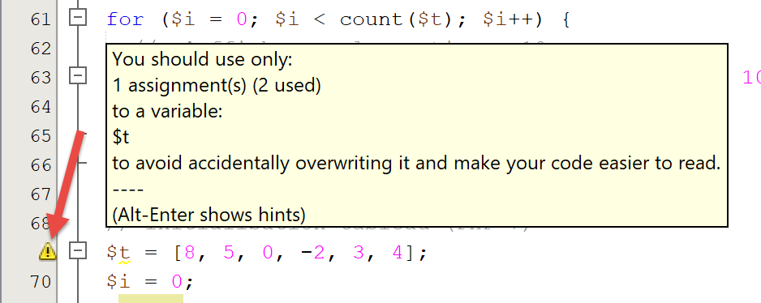
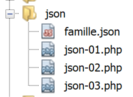

3. PHP 基础
3.1. 脚本目录结构

3.2. PHP 配置
PHP 通过一个名为 [php.ini] 的文本文件进行预配置。所有这些设置均可通过编程方式进行修改。PHP 配置对脚本的执行影响很大，因此理解它非常重要。以下脚本 [phpinfo.php] 可帮助您了解这些配置：
注释
- 第 3 行：[phpinfo] 函数用于显示 PHP 配置；
执行结果
[phpinfo] 函数在此处显示了超过 800 行配置。 我们不会对它们逐一评论，因为其中大部分涉及高级 PHP 用法。上面第 13 行是一条重要信息：它指明了用于配置你运行脚本所用 PHP 的 [php.ini] 文件。如果你想更改 PHP 运行时配置，这就是你需要编辑的文件。该文件中包含大量注释，解释了各种设置的作用。
3.3. 第一个示例
3.3.1. 代码
下面是一个名为 [bases-01.php] 的程序，用于演示 PHP 的基本功能。
<?php
// this is a comment
// variable used without being declared
$nom = "dupont";
// a screen display
print "nom=$nom\n";
// an array with elements of different types
$tableau = array("un", "deux", 3, 4);
// its number of elements
$n = count($tableau);
// a loop
for ($i = 0; $i < $n; $i++) {
print "tableau[$i]=$tableau[$i]\n";
}
// initialize 2 variables with the contents of an array
list($chaine1, $chaine2) = array("chaine1", "chaine2");
// concatenation of the 2 strings
$chaine3 = $chaine1 . $chaine2;
// result display
print "[$chaine1,$chaine2,$chaine3]\n";
// use function
affiche($chaine1);
// the type of a variable can be known
afficheType("n", $n);
afficheType("chaine1", $chaine1);
afficheType("tableau", $tableau);
// the type of a variable can change at runtime
$n = "a changé";
afficheType("n", $n);
// a function can return a result
$res1 = f1(4);
print "res1=$res1\n";
// a function can render a table of values
list($res1, $res2, $res3) = f2();
print "(res1,res2,res3)=[$res1,$res2,$res3]\n";
// we could have retrieved these values in a table
$t = f2();
for ($i = 0; $i < count($t); $i++) {
print "t[$i]=$t[$i]\n";
}
// testing
for ($i = 0; $i < count($t); $i++) {
// displays only channels
if (getType($t[$i]) === "string") {
print "t[$i]=$t[$i]\n";
}
}
// == and === comparison operators
if("2"==2){
print "avec l'opérateur ==, la chaîne 2 est égale à l'entier 2\n";
}else{
print "avec l'opérateur ==, la chaîne 2 n'est pas égale à l'entier 2\n";
}
if("2"===2){
print "avec l'opérateur ===, la chaîne 2 est égale à l'entier 2\n";
}
else{
print "avec l'opérateur ===, la chaîne 2 n'est pas égale à l'entier 2\n";
}
// other tests
for ($i = 0; $i < count($t); $i++) {
// displays only integers >10
if (getType($t[$i]) === "integer" and $t[$i] > 10) {
print "t[$i]=$t[$i]\n";
}
}
// a while loop
$t = [8, 5, 0, -2, 3, 4];
$i = 0;
$somme = 0;
while ($i < count($t) and $t[$i] > 0) {
print "t[$i]=$t[$i]\n";
$somme += $t[$i]; //$somme=$somme+$t[$i]
$i++; //$i=$i+1
}//while
print "somme=$somme\n";
// end of program
exit;
//----------------------------------
function affiche($chaine) {
// displays $chaine
print "chaine=$chaine\n";
}
//poster
//----------------------------------
function afficheType($name, $variable) {
// displays the type of $variable
print "type[variable $" . $name . "]=" . getType($variable) . "\n";
}
//afficheType
//----------------------------------
function f1($param) {
// adds 10 to $param
return $param + 10;
}
//----------------------------------
function f2() {
// returns 3 values
return array("un", 0, 100);
}
?>
结果：
nom=dupont
tableau[0]=un
tableau[1]=deux
tableau[2]=3
tableau[3]=4
[chaine1,chaine2,chaine1chaine2]
chaine=chaine1
type[variable $n]=integer
type[variable $chaine1]=string
type[variable $tableau]=array
type[variable $n]=string
res1=14
(res1,res2,res3)=[un,0,100]
t[0]=un
t[1]=0
t[2]=100
t[0]=un
avec l'opérateur ==, la chaîne 2 est égale à l'entier 2
avec l'opérateur ===, la chaîne 2 n'est pas égale à l'entier 2
t[2]=100
t[0]=8
t[1]=5
somme=13
注释
- 第 5 行：在 PHP 中，无需声明变量类型。变量具有动态类型，其类型会随时间变化。$name 表示标识符为 name 的变量；
- 第 7 行：要在屏幕上显示输出，可以使用 print 语句或 echo 语句；
- 第 9 行：关键字 array 用于定义数组。变量 $name[$i] 表示 $array 数组中的第 $i 个元素；
- 第 11 行：函数 count($tableau) 返回 $tableau 数组中的元素个数；
- 第 13–15 行：一个循环。由于该循环仅包含一条语句，因此花括号是可选的。在本文档的其余部分中，无论语句数量多少，我们都将始终使用花括号；
- 第 14 行：字符串用双引号 " 或单引号 ' 括起。在双引号内，变量 $variable 会被求值，但在单引号内则不会；
- 第 17 行：list 函数允许您将变量组合成列表，并通过单次赋值操作为其赋值。此处，$chaine1="chaine1" 和 $chaine2="chaine2"；
- 第 19 行：. 运算符是字符串连接运算符；
- 第 83–86 行：关键字 `function` 用于定义函数。函数可以使用 `return` 语句返回值，也可以不返回值。调用代码可以忽略函数的结果，也可以获取其结果。函数可以在代码的任何位置定义。
- 第 92 行：预定义函数 getType($variable) 返回一个字符串，表示 $variable 的类型。该类型可能会随时间变化；
- 第 45 行：=== 运算符对两个元素进行严格比较：被比较的元素必须是同一种类型。== 运算符则不那么严格：两个元素即使类型不同，也可能相等。第 50–60 行的语句演示了这一点。 对于 == 运算符，比较是在将待比较的两个元素强制转换为同一类型后进行的。此时会发生隐式转换。人们很容易“忽略”这些隐式转换，从而导致意外结果，例如发现本应为假的条件却被判定为真。为避免这一陷阱，我们将系统地使用 === 比较运算符；
- 第 64 行：你也可以使用布尔运算符 or 和 !；
- 第 69 行：在 PHP 7 中，你可以使用 [] 语法代替 array() 语法来初始化数组；
- 第 80 行：预定义的 exit 函数会终止脚本的运行；
- 第 107 行：?> 标签标记 PHP 脚本的结束。它并非必需。此外，在 Web 环境中，如果其后跟有空格或换行符，可能会引发问题，而这些内容在文本编辑器中不可见，因此难以检测。因此，在本文档的其余部分中，我们将始终省略此标签；
注意：在本文档中，我们将使用 [print] 关键字在控制台上显示文本。另一种实现相同效果的方法是使用 [echo] 关键字。这两个关键字之间存在细微差别，但在本文档的语境下，它们没有区别。因此，如果您更喜欢使用 [echo]，请随意使用。
3.3.2. 使用 NetBeans
NetBeans 会发出各种值得关注的警告。让我们以 [bases-01.php] 脚本为例：

在第 5 行，NetBeans 发出警告，指出该文件不符合 PSR-1 建议（PHP 标准建议第 1 号）。PSR 是关于编写标准代码的建议，旨在促进不同人员编写的代码之间的互操作性和可维护性。如果你有意违反标准（例如因为项目团队有不同的标准），收到这些警告可能会令人烦恼。 NetBeans 检查哪些内容（或不检查哪些内容）是可以配置的：

- 在 [5] 中，您将找到 NetBeans 用于检查的各项内容；
- 在 [6] 中，NetBeans 报告的错误所对应的严重性级别；

在[7]中，您可以看到我们已请求检查代码是否遵循PSR-0和PSR-1的建议。这些检查均非强制性。在学习该语言时，建议尽可能启用NetBeans提供的各项检查功能。通过这种方式，您将获益良多。随后，您可以根据项目团队的编码规范调整这些NetBeans检查设置。
让我们来看看 PSR-1 编码规范 [8, 9]：
选项 | 检查 |
| 类常量必须全部大写，并使用下划线分隔。 例：const TAUX_TVA |
| 方法名称必须采用驼峰式命名法（camelCase）。 示例：public function executeBatchTaxes{} |
| 属性名称应采用 $StudlyCaps、$camelCase 或 $under_score 格式（在同一作用域内保持一致） 例：public AnnualSalary（大写首字母），public annualSalary（驼峰式），public annual_salary（下划线） |
| 一个文件应声明新的符号且不产生其他副作用，或者应执行具有副作用的逻辑，但不应两者兼有。 |
| 类型名称必须采用 StudlyCaps 格式声明（针对 5.2.x 及更早版本编写的代码应使用 Vendor_ 前缀作为类型名称的伪命名空间约定）。每个类型位于独立的文件中，并处于至少一个级别的命名空间内：即顶级供应商名称。 示例：class ScholarshipStudent {} |
PSR-1/4 建议规定，PHP 文件必须包含：
- 类型声明（类、接口）；
- 或不含新类型声明的可执行代码；
还有其他一些 PHP 建议规范未被 NetBeans 强制执行：PSR-3、PSR-4、PSR-6、PSR-7 和 PSR-13。
为简化起见，本文档中的示例并非全部遵循 PSR-1 建议，因为这需要将类和接口代码拆分为单独的文件，对于基础示例而言过于繁琐。因此，将所有内容放在一个文件中更为简便。对于作为本文档核心主题的示例应用程序，我们已尽力尽可能严格地遵循 PSR-1 建议。
某些 NetBeans 警告提示了潜在的错误：

[未初始化变量] 警告表示可能存在错误，通常是变量名中的拼写错误。同样的情况也适用于 [未使用变量] 警告。
最后，建议您检查所有 NetBeans 警告，这些警告通过代码左侧边距的横幅和右侧边距的黄色短横线来标识：


3.4. 变量作用域
3.4.1. 示例 1
[bases-02.php] 脚本如下：
<?php
// variable scope
function f1() {
// we use the global variable $i
global $i;
$i++;
$j = 10;
print "f1[i,j]=[$i,$j]\n";
}
function f2() {
// we use the global variable $i
global $i;
$i++;
$j = 20;
print "f2[i,j]=[$i,$j]\n";
}
function f3() {
// we use a local variable $i
$i = 4;
$j = 30;
print "f3[i,j]=[$i,$j]\n";
}
// tests
$i = 0;
$j = 0; // these two variables are known only to a function f
// only if it explicitly declares with the global instruction
// she wants to use them
f1();
f2();
f3();
print "test[i,j]=[$i,$j]\n";
结果：
注释
- 第 29–30 行：在主程序中定义了两个变量 $i 和 $j。这些变量在函数内部是未知的。因此，在第 9 行中，函数 f1 中的变量 $j 是函数 f1 的局部变量，与主程序中的变量 $j 不同。函数可以使用关键字 global 访问主程序中的变量 $variable；
- 第 7 行，该语句引用了主程序的全局变量 $i；
3.4.2. 示例 3
脚本 [bases-03.php] 如下所示：
<?php
// the scope of a variable is global to code blocks
$i = 0; {
$i = 4;
$i++;
}
print "i=$i\n";
结果：
注释
在某些语言中，大括号内定义的变量作用域仅限于该大括号：大括号外部无法访问该变量。上面的结果表明，PHP 并非如此。第 5 行大括号内定义的变量 $i 与第 4 行和第 8 行大括号外部使用的变量是同一个。
3.5. 类型变化
PHP 中的变量没有固定的类型。其类型会在执行过程中根据变量的赋值而改变。在涉及不同类型数据的运算中，PHP 解释器会执行隐式转换，将操作数转换为共同的类型。如果开发者不了解这些隐式转换，它们可能会成为难以检测的错误源。下面是一个演示隐式和显式转换的脚本 [bases-04.php]：
<?php
// strict types for passing parameters
declare(strict_types=1);
// implicit type changes
// type -->bool
print "Conversion vers un booléen------------------------------\n";
showBool("abcd", "abcd");
showBool("", "");
showBool("[1, 2, 3]", [1, 2, 3]);
showBool("[]", []);
showBool("NULL", NULL);
showBool("0.0", 0.0);
showBool("0", 0);
showBool("4.6", 4.6);
function showBool(string $prefixe, $var) : void {
print "(bool) $prefixe : ";
// conversion of $var to Boolean is automatic in the following test
if ($var) {
print "true";
} else {
print "false";
}
print "\n";
}
注释
- 第 4 行：指定时要求对函数参数进行严格的类型检查；
- 第 18 行：[showBool] 函数旨在演示当任何类型的值必须转换为布尔值时（第 21 行），PHP 解释器执行的隐式（自动）转换；
- 第 18 行：$var 参数未指定类型。因此，该实际参数可以是任何类型。另一方面，$prefix 参数必须是字符串类型。showBool 函数不返回值（void）；
- 第 21 行：在 if($var) 语句中，$var 的值必须转换为布尔值，if 语句才能被评估。令人惊讶的是，PHP 解释器对任何类型的传入值都有相应的处理方案；
- 第 9–16 行：[showBool] 函数参数的值将依次为：
- 第 9 行：非空字符串：结果为 TRUE（不区分大小写，TRUE=true）；
- 第 10 行：空字符串：结果为 FALSE；
- 第 11 行：非空数组：结果为 TRUE；
- 第 12 行：空数组：结果为 FALSE；
- 第 14 行：实数 0：结果为 FALSE；
- 第 15 行：整数 0：结果为 FALSE；
- 第 16 行：一个不为 0 的实数（或整数）：结果为 TRUE；
屏幕显示如下：
Conversion vers un booléen------------------------------
(bool) abcd : true
(bool) : false
(bool) [1, 2, 3] : true
(bool) [] : false
(bool) NULL : false
(bool) 0.0 : false
(bool) 0 : false
(bool) 4.6 : true
让我们继续看脚本代码：
//
// implicit changes from string type to numeric type
// string --> number
print "Conversion chaîne vers nombre------------------------------\n";
showNumber("12");
showNumber("45.67");
showNumber("abcd");
function showNumber(string $var) : void {
$nombre = $var + 1;
var_dump($nombre);
print "($var): $nombre\n";
}
注释
- 第 9 行：[showNumber] 函数接受一个字符串参数，且不返回结果（void）；
- 第 10 行：该参数被用于算术运算，这将迫使 PHP 解释器尝试将 $var 转换为数字；
- 第 5 行：将字符串“12”转换为整数 12；
- 第 6 行：将字符串“45.67”转换为浮点数 45.67；
- 第 7 行：将触发警告，但仍会将字符串“abcd”转换为数字 0；
以下是执行结果：
让我们继续查看脚本代码：
// changements explicites de type
// vers int
showInt("12.45");
showInt(67.8);
showInt(TRUE);
showInt(NULL);
function showInt($var) : void {
print "paramètre : ";
var_dump($var);
print "\n";
print "résultat de la conversion : ";
var_dump((int) $var);
print "\n";
}
注释
- 第 21 行：[showInt] 函数接受任意类型的参数，且不返回结果。它在第 26 行尝试将参数 $var 转换为整数。通常，要将变量 $var 强制转换为类型 T，我们写成 (T) $var，其中 T 可以是：int、integer、bool、boolean、float、double、real、string、array、object、unset；
- 第 16 行：将字符串“12.45”转换为整数 12；
- 第 17 行：将实数 67.8 转换为整数 67；
- 第 18 行：将布尔值 TRUE 转换为整数 1（布尔值 FALSE 转换为整数 0）；
- 第 19 行：将 NULL 指针转换为整数 0；
屏幕上显示的内容如下：
我们继续研究该脚本，重点是将值显式转换为 float 类型：
// to float
showFloat("12.45");
showFloat(67);
showFloat(TRUE);
showFloat(NULL);
function showFloat($var) : void {
print "paramètre : ";
var_dump($var);
print "\n";
print "résultat de la conversion : ";
var_dump((float) $var);
print "\n";
}
注释
- 第 35 行：[showFloat] 函数接受任意类型的参数，且不返回结果；
- 第 40 行：该参数的值被显式转换为 float 类型；
- 第 30 行：字符串“12.45”被转换为浮点数 12.45；
- 第 31 行：整数 67 被转换为实数 67；
- 第 32 行：布尔值 TRUE 被转换为实数 1（布尔值 FALSE 被转换为 0）；
- 第 33 行：NULL 指针被转换为实数 0；
屏幕输出如下所示：
我们继续脚本概述，接下来探讨向字符串类型的转换：
// to string
showstring(5);
showString(6.7);
showString(FALSE);
showString(NULL);
function showString($var) : void {
print "paramètre : ";
var_dump($var);
print "\n";
print "résultat de la conversion : ";
var_dump((string) $var);
print "\n";
}
- 第 49 行：[showString] 函数接受任意类型的参数，且不返回结果；
- 第 54 行：参数值被转换为字符串；
- 第 44 行：整数 5 将被转换为字符串 "5"；
- 第 45 行：浮点数 6.7 将被转换为字符串 "6.7"；
- 第 46 行：布尔值 FALSE 将被转换为空字符串；
- 第 47 行：NULL 指针被转换为空字符串；
以下是屏幕显示结果：
3.6. 数组
3.6.1. 经典的一维数组
脚本 [bases-05.php] 如下：
<?php
// classic paintings
// initialization
$tab1 = array(0, 1, 2, 3, 4, 5);
// routes - 1
print "tab1 a " . count($tab1) . " éléments\n";
for ($i = 0; $i < count($tab1); $i++) {
print "tab1[$i]=$tab1[$i]\n";
}
// routes - 2
print "tab1 a " . count($tab1) . " éléments\n";
reset($tab1);
while (list($clé, $valeur) = each($tab1)) {
print "tab1[$clé]=$valeur\n";
}
// add elements
$tab1[] = $i++;
$tab1[] = $i++;
// routes - 3
print "tab1 a " . count($tab1) . " éléments\n";
$i = 0;
foreach ($tab1 as $élément) {
print "tab1[$i]=$élément\n";
$i++;
}
// delete last item
array_pop($tab1);
// routes - 4
print "tab1 a " . count($tab1) . " éléments\n";
for ($i = 0; $i < count($tab1); $i++) {
print "tab1[$i]=$tab1[$i]\n";
}
// delete first element
array_shift($tab1);
// routes - 5
print "tab1 a " . count($tab1) . " éléments\n";
for ($i = 0; $i < count($tab1); $i++) {
print "tab1[$i]=$tab1[$i]\n";
}
// addition at end of table
array_push($tab1, -2);
// routes - 6
print "tab1 a " . count($tab1) . " éléments\n";
for ($i = 0; $i < count($tab1); $i++) {
print "tab1[$i]=$tab1[$i]\n";
}
// addition at the beginning of the table
array_unshift($tab1, -1);
// routes - 7
print "tab1 a " . count($tab1) . " éléments\n";
for ($i = 0; $i < count($tab1); $i++) {
print "tab1[$i]=$tab1[$i]\n";
}
结果：
tab1 a 6 éléments
tab1[0]=0
tab1[1]=1
tab1[2]=2
tab1[3]=3
tab1[4]=4
tab1[5]=5
tab1 a 6 éléments
Deprecated: The each() function is deprecated. This message will be suppressed on further calls in C:\Data\st-2019\dev\php7\php5-exemples\exemples\exemple_04.php on line 14
tab1[0]=0
tab1[1]=1
tab1[2]=2
tab1[3]=3
tab1[4]=4
tab1[5]=5
tab1 a 8 éléments
tab1[0]=0
tab1[1]=1
tab1[2]=2
tab1[3]=3
tab1[4]=4
tab1[5]=5
tab1[6]=6
tab1[7]=7
tab1 a 7 éléments
tab1[0]=0
tab1[1]=1
tab1[2]=2
tab1[3]=3
tab1[4]=4
tab1[5]=5
tab1[6]=6
tab1 a 6 éléments
tab1[0]=1
tab1[1]=2
tab1[2]=3
tab1[3]=4
tab1[4]=5
tab1[5]=6
tab1 a 7 éléments
tab1[0]=1
tab1[1]=2
tab1[2]=3
tab1[3]=4
tab1[4]=5
tab1[5]=6
tab1[6]=-2
tab1 a 8 éléments
tab1[0]=-1
tab1[1]=1
tab1[2]=2
tab1[3]=3
tab1[4]=4
tab1[5]=5
tab1[6]=6
tab1[7]=-2
注释
上面的程序演示了如何对数组进行操作。PHP 中有两种数组表示法：
数组 1 被称为数组，数组 2 被称为字典或关联数组，其中元素以键 => 值的形式表示。表示法 $opposites["beautiful"] 指的是与键 "beautiful" 关联的值。在此，该值是字符串 "ugly"。数组 1 只是字典的一种变体，可以写成：
这将使 $array[2] = "three"。归根结底，这些都是字典。对于包含 n 个元素的标准数组，其键是 [0, n-1] 范围内的整数。
- 第 14 行：each($array) 函数允许你遍历字典。每次调用时，它都会返回一个 (键, 值) 对。如结果第 10 行所示，each 函数在 PHP 7 中已被废弃；
- 第 13 行：reset($dictionary) 函数将 each 函数的起始位置重置为字典中的第一个 (键, 值) 对。
- 第 14 行：当 each 函数在字典末尾返回空元组时，while 循环停止。此处发生了一次隐式转换：空元组被转换为布尔值 FALSE；
- 第 18 行：$array[]=value 这种写法将元素 value 作为 $array 的最后一个元素添加进去；
- 第 23 行：使用 foreach 循环遍历数组。该语法允许您使用两种不同的语法遍历字典（以及数组）：
第一种语法在每次迭代时返回一个 (键,值) 对，而第二种语法仅返回字典中的值元素。
- 第 28 行：array_pop($array) 函数从 $array 中移除最后一个元素；
- 第 35 行：array_shift($array) 函数从 $array 中移除第一个元素；
- 第 42 行：array_push($array,value) 函数将 value 作为 $array 的最后一个元素添加进去；
- 第 49 行：array_unshift($array, value) 函数将 value 作为 $array 的第一个元素添加进去；
3.6.2. 字典或关联数组
脚本 [bases-06.php] 如下：
<?php
// dictionaries
$conjoints = ["Pierre" => "Gisèle", "Paul" => "Virginie", "Jacques" => "Lucette", "Jean" => ""];
// routes - 1
print "Nombre d'éléments du dictionnaire : " . count($conjoints) . "\n";
reset($conjoints);
while (list($clé, $valeur) = each($conjoints)) {
print "conjoints[$clé]=$valeur\n";
}
// dictionary sorting on key
ksort($conjoints);
// routes - 2
reset($conjoints);
while (list($clé, $valeur) = each($conjoints)) {
print "conjoints[$clé]=$valeur\n";
}
// list of dictionary keys
$clés = array_keys($conjoints);
for ($i = 0; $i < count($clés); $i++) {
print "clés[$i]=$clés[$i]\n";
}
// list of dictionary values
$valeurs = array_values($conjoints);
for ($i = 0; $i < count($valeurs); $i++) {
print "valeurs[$i]=$valeurs[$i]\n";
}
// key search
existe($conjoints, "Jacques");
existe($conjoints, "Lucette");
existe($conjoints, "Jean");
// deleting a key-value
unset($conjoints["Jean"]);
print "Nombre d'éléments du dictionnaire : " . count($conjoints) . "\n";
foreach ($conjoints as $clé => $valeur) {
print "conjoints[$clé]=$valeur\n";
}
// end
exit;
function existe($conjoints, $mari) {
// checks whether the key $mari exists in the dictionary $conjoints
if (isset($conjoints[$mari])) {
print "La clé [$mari] existe associée à la valeur [$conjoints[$mari]]\n";
} else {
print "La clé [$mari] n'existe pas\n";
}
}
结果：
Nombre d'éléments du dictionnaire : 4
Deprecated: The each() function is deprecated. This message will be suppressed on further calls in C:\Data\st-2019\dev\php7\php5-exemples\exemples\exemple_05.php on line 8
conjoints[Pierre]=Gisèle
conjoints[Paul]=Virginie
conjoints[Jacques]=Lucette
conjoints[Jean]=
conjoints[Jacques]=Lucette
conjoints[Jean]=
conjoints[Paul]=Virginie
conjoints[Pierre]=Gisèle
clés[0]=Jacques
clés[1]=Jean
clés[2]=Paul
clés[3]=Pierre
valeurs[0]=Lucette
valeurs[1]=
valeurs[2]=Virginie
valeurs[3]=Gisèle
La clé [Jacques] existe associée à la valeur [Lucette]
La clé [Lucette] n'existe pas
La clé [Jean] existe associée à la valeur []
Nombre d'éléments du dictionnaire : 3
conjoints[Jacques]=Lucette
conjoints[Paul]=Virginie
conjoints[Pierre]=Gisèle
注释
上面的代码将我们之前针对简单数组所介绍的内容应用到了字典上。我们仅对新功能进行说明：
- 第 12 行：ksort（按键值排序）函数会按键值的自然顺序对字典进行排序；
- 第 19 行：array_keys($dictionary) 函数将字典的键列表作为数组返回；
- 第 24 行：array_values($dictionary) 函数将字典的值列表作为数组返回；
- 第 43 行：isset($variable) 函数在 $variable 已定义时返回 TRUE，否则返回 FALSE；
- 第 33 行：unset($variable) 函数用于删除 $variable。
3.6.3. 多维数组
[bases-07.php] 脚本内容如下：
<?php
// classic multidimensional tables
// initialization
$multi = array(array(0, 1, 2), array(10, 11, 12, 13), array(20, 21, 22, 23, 24));
// route
for ($i1 = 0; $i1 < count($multi); $i1++) {
for ($i2 = 0; $i2 < count($multi[$i1]); $i2++) {
print "multi[$i1][$i2]=" . $multi[$i1][$i2] . "\n";
}
}
// multidimensional dictionaries
// initialization
$multi = array("zéro" => array(0, 1, 2), "un" => array(10, 11, 12, 13), "deux" => array(20, 21, 22, 23, 24));
// route
foreach ($multi as $clé => $valeur) {
for ($i2 = 0; $i2 < count($valeur); $i2++) {
print "multi[$clé][$i2]=" . $multi[$clé][$i2] . "\n";
}
}
结果：
multi[0][0]=0
multi[0][1]=1
multi[0][2]=2
multi[1][0]=10
multi[1][1]=11
multi[1][2]=12
multi[1][3]=13
multi[2][0]=20
multi[2][1]=21
multi[2][2]=22
multi[2][3]=23
multi[2][4]=24
multi[zéro][0]=0
multi[zéro][1]=1
multi[zéro][2]=2
multi[un][0]=10
multi[un][1]=11
multi[un][2]=12
multi[un][3]=13
multi[deux][0]=20
multi[deux][1]=21
multi[deux][2]=22
multi[deux][3]=23
multi[deux][4]=24
注释
- 第 5 行：$multi 数组的元素本身也是数组；
- 第 14 行：$multi 数组变成了一个 (键, 值) 字典，其中每个值都是一个数组；
3.7. 字符串
3.7.1. 符号
脚本 [bases-08.php] 如下：
<?php
// string notation
$chaine1 = "un";
$chaine2 = 'un';
print "[$chaine1,$chaine2]\n";
?>
结果：
3.7.2. 比较
脚本 [bases-09.php] 如下：
<?php
// strict adherence to function parameter types
declare(strict_types=1);
// comparison function
function compareModele2Chaine(string $chaine1, string $chaine2): void {
// compare string1 and string2
if ($chaine1 === $chaine2) {
print "[$chaine1] est égal à [$chaine2]\n";
} else {
print "[$chaine1] est différent de [$chaine2]\n";
}
}
// string comparison tests
compareModele2Chaine("abcd", "abcd");
compareModele2Chaine("", "");
compareModele2Chaine("1", "");
exit;
结果：
[abcd] est égal à [abcd]
[] est égal à []
[1] est différent de []
评论
- 代码第 9 行：我们可以使用 == 运算符代替 ===。后者更为严格，因为它要求两个操作数必须是同一种类型。请注意，在此处，由于函数签名中两个参数的类型都设置为字符串，因此可以使用 == 运算符代替；
3.7.3. 字符串与数组之间的关联
[bases-10.php] 脚本如下：
<?php
// string to array
$chaine = "1:2:3:4";
$tab = explode(":", $chaine);
// parcours tableau
print "tab a " . count($tab) . " éléments\n";
for ($i = 0; $i < count($tab); $i++) {
print "tab[$i]=$tab[$i]\n";
}
// table to string
$chaine2 = implode(":", $tab);
print "chaine2=$chaine2\n";
// add an empty field
$chaine .= ":";
print "chaîne=$chaine\n";
$tab = explode(":", $chaine);
// parcours tableau
print "tab a " . count($tab) . " éléments\n";
for ($i = 0; $i < count($tab); $i++) {
print "tab[$i]=$tab[$i]\n";
} // we now have 5 elements, the last being empty
// let's add another empty field
$chaine .= ":";
print "chaîne=$chaine\n";
$tab = explode(":", $chaine);
// parcours tableau
print "tab a " . count($tab) . " éléments\n";
for ($i = 0; $i < count($tab); $i++) {
print "tab[$i]=$tab[$i]\n";
} // we now have 6 elements, the last two being empty
结果：
tab a 4 éléments
tab[0]=1
tab[1]=2
tab[2]=3
tab[3]=4
chaine2=1:2:3:4
chaîne=1:2:3:4:
tab a 5 éléments
tab[0]=1
tab[1]=2
tab[2]=3
tab[3]=4
tab[4]=
chaîne=1:2:3:4::
tab a 6 éléments
tab[0]=1
tab[1]=2
tab[2]=3
tab[3]=4
tab[4]=
tab[5]=
注释
- 第 5 行：explode($separator, $string) 函数用于提取 $string 中以 $separator 分隔的字段。因此，explode(":", $string) 会将 $string 中以字符串 ":" 分隔的元素作为数组返回；
- 第 12 行：implode($separator,$array) 函数执行与 explode 函数相反的操作。它返回一个字符串，该字符串由 $array 的元素组成，并以 $separator 分隔；
3.7.4. 正则表达式
[bases-11.php] 脚本如下：
<?php
// strict type for function parameters
declare (strict_types=1);
// regular expressions in php
// retrieve the various fields of a string
// the model: a sequence of numbers surrounded by any characters
// you only want to retrieve the sequence of digits
$modèle = "/(\d+)/";
// the chain is compared with the model
compareModele2Chaine($modèle, "xyz1234abcd");
compareModele2Chaine($modèle, "12 34");
compareModele2Chaine($modèle, "abcd");
// the model: a sequence of numbers surrounded by any characters
// we want the sequence of digits and the fields that follow and precede them
$modèle = "/^(.*?)(\d+)(.*?)$/";
// the chain is compared with the model
compareModele2Chaine($modèle, "xyz1234abcd");
compareModele2Chaine($modèle, "12 34");
compareModele2Chaine($modèle, "abcd");
// the template - a date in dd/mm/yy format
$modèle = "/^\s*(\d\d)\/(\d\d)\/(\d\d)\s*$/";
compareModele2Chaine($modèle, "10/05/97");
compareModele2Chaine($modèle, " 04/04/01 ");
compareModele2Chaine($modèle, "5/1/01");
// the model - a decimal number
$modèle = "/^\s*([+|-]?)\s*(\d+\.\d*|\.\d+|\d+)\s*/";
compareModele2Chaine($modèle, "187.8");
compareModele2Chaine($modèle, "-0.6");
compareModele2Chaine($modèle, "4");
compareModele2Chaine($modèle, ".6");
compareModele2Chaine($modèle, "4.");
compareModele2Chaine($modèle, " + 4");
// end
exit;
// --------------------------------------------------------------------------
function compareModele2Chaine(string $modèle, string $chaîne): void {
// compares the $chaîne string with the $modèle model
// the chain is compared with the
$champs = [];
$correspond = preg_match($modèle, $chaîne, $champs);
// displaying results
print "\nRésultats($modèle,$chaîne)\n";
if ($correspond) {
for ($i = 0; $i < count($champs); $i++) {
print "champs[$i]=$champs[$i]\n";
}
} else {
print "La chaîne [$chaîne] ne correspond pas au modèle [$modèle]\n";
}
}
结果：
Résultats(/(\d+)/,xyz1234abcd)
champs[0]=1234
champs[1]=1234
Résultats(/(\d+)/,12 34)
champs[0]=12
champs[1]=12
Résultats(/(\d+)/,abcd)
La chaîne [abcd] ne correspond pas au modèle [/(\d+)/]
Résultats(/^(.*?)(\d+)(.*?)$/,xyz1234abcd)
champs[0]=xyz1234abcd
champs[1]=xyz
champs[2]=1234
champs[3]=abcd
Résultats(/^(.*?)(\d+)(.*?)$/,12 34)
champs[0]=12 34
champs[1]=
champs[2]=12
champs[3]= 34
Résultats(/^(.*?)(\d+)(.*?)$/,abcd)
La chaîne [abcd] ne correspond pas au modèle [/^(.*?)(\d+)(.*?)$/]
Résultats(/^\s*(\d\d)\/(\d\d)\/(\d\d)\s*$/,10/05/97)
champs[0]=10/05/97
champs[1]=10
champs[2]=05
champs[3]=97
Résultats(/^\s*(\d\d)\/(\d\d)\/(\d\d)\s*$/, 04/04/01 )
champs[0]= 04/04/01
champs[1]=04
champs[2]=04
champs[3]=01
Résultats(/^\s*(\d\d)\/(\d\d)\/(\d\d)\s*$/,5/1/01)
La chaîne [5/1/01] ne correspond pas au modèle [/^\s*(\d\d)\/(\d\d)\/(\d\d)\s*$/]
Résultats(/^\s*([+|-]?)\s*(\d+\.\d*|\.\d+|\d+)\s*/,187.8)
champs[0]=187.8
champs[1]=
champs[2]=187.8
Résultats(/^\s*([+|-]?)\s*(\d+\.\d*|\.\d+|\d+)\s*/,-0.6)
champs[0]=-0.6
champs[1]=-
champs[2]=0.6
Résultats(/^\s*([+|-]?)\s*(\d+\.\d*|\.\d+|\d+)\s*/,4)
champs[0]=4
champs[1]=
champs[2]=4
Résultats(/^\s*([+|-]?)\s*(\d+\.\d*|\.\d+|\d+)\s*/,.6)
champs[0]=.6
champs[1]=
champs[2]=.6
Résultats(/^\s*([+|-]?)\s*(\d+\.\d*|\.\d+|\d+)\s*/,4.)
champs[0]=4.
champs[1]=
champs[2]=4.
Résultats(/^\s*([+|-]?)\s*(\d+\.\d*|\.\d+|\d+)\s*/, + 4)
champs[0]= + 4
champs[1]=+
champs[2]=4
注释
- 在此，我们使用正则表达式从字符串中提取各个字段。正则表达式使我们能够克服 implode 函数的局限性。其原理是使用 preg_match 函数将一个字符串与另一个称为“模式”的字符串进行比较：
$correspond = preg_match($modèle, $chaîne, $champs);
如果字符串中包含该模式，preg_match 函数将返回布尔值 TRUE。此时，$fields[0] 表示与该模式匹配的子字符串。此外，如果模式包含用圆括号括起的子模式，则 $fields[1] 表示 $string 中与第一个子模式对应的片段，$fields[2] 表示 $string 中与第二个子模式对应的片段，以此类推……
考虑第一个示例。模式在第 10 行定义：它表示字符串中任意位置的一个或多个 (+) 数字 (\d) 序列。此外，该模式定义了一个用括号括起的子模式；
- 第 12 行：模式 /(\d+)/（字符串中任意位置的一个或多个数字序列）与字符串 "xyz1234abcd" 进行匹配。我们可以看到子字符串 1234 与该模式匹配。因此，$champs[0] 的值将为 "1234"。此外，该模式包含用圆括号括起的子模式。 此时 $champs[1]="1234";
- 第 13 行：将正则表达式 /(\d+)/ 与字符串 "12 34" 进行比对。我们看到子字符串 12 和 34 都匹配该正则表达式。比对会在第一个匹配的子字符串处停止。因此，$champs[0]=12 且 $champs[1]=12；
- 第 14 行：将正则表达式 /(\d+)/ 与字符串 "abcd" 进行匹配。未找到匹配项；
下面解释代码其余部分中使用的正则表达式：
$modèle = "/^(.*?)(\d+)(.*?)$/";
匹配字符串的开头（^），随后是零个或多个（*）任意字符（.），接着是一个或多个（+）数字，最后是零个或多个（*）任意字符（.）。 模式 (.*) 匹配零个或多个任意字符。此类模式将匹配任何字符串。因此，模式 /^(.*)(\d+)(.*)$/ 永远无法被匹配，因为第一个子模式 (.*) 将消耗整个字符串。模式 (.*?)(\d+) 表示零个或多个任意字符，直至下一个子模式 (?)（在此情况下为 \d+）。 因此，数字部分不再被模式 (.*?) 捕获。上述模式因此匹配 [字符串开头 (^)，任意字符序列 (.*?)，一个或多个数字序列 (\d+)，任意字符序列 (.*?)，字符串结尾 ($)]。
$modèle = "/^\s*(\d\d)\/(\d\d)\/(\d\d)\s*$/";
对应于 [字符串开头 (^)，2 个数字 (\d\d)，字符 / (\/)，2 个数字，/，2 个数字，0 个或多个空格 (\s*)，字符串结尾 ($)]。
$modèle = "/^\s*([+|-]?)\s*(\d+\.\d*|\.\d+|\d+)\s*/";
匹配字符串开头 (^)，0 个或多个空格 (\s*)，0 次或 1 次出现的 + 或 - 符号 [+|-] (？)，0 个或多个空格的序列 (\s*)， 1 个或多个数字后跟小数点，再后跟 0 个或多个数字 (\d+\.\d*) 或 (|) 小数点 (\.) 后跟 1 个或多个数字 (\d+) 或 (|) 1 个或多个数字 (\d+)，以及 0 个或多个空格 (\s*)]。
注：正则表达式中的 [space] 指代一组字符：空格、换行符 \n、制表符 \t、回车符 \r、换页符 \f…
3.8. 函数
3.8.1. 参数传递模式
[base-12.php] 脚本如下：
<?php
// function parameter step mode
// strict adherence to parameter type
declare(strict_types=1);
function f(int &$i, int $j): void {
// $i will be obtained by reference
// $j will be obtained by value
$i++;
$j++;
print "f[i,j]=[$i,$j]\n";
}
// tests
$i = 0;
$j = 0;
// $i and $j are passed to function f
f($i, $j);
print "test[i,j]=[$i,$j]\n";
结果：
注释
上面的代码演示了向函数传递参数的两种方式。请看以下示例：
- 第 1 行：定义函数 f 的形式参数 $a 和 $b。该函数对这两个形式参数进行处理并返回结果；
- 第 7 行：使用两个实际参数 $i 和 $j 调用函数 f。形式参数 ($a, $b) 与实际参数 ($i, $j) 之间的关系由第 1 行和第 7 行定义：
- &$a：&符号表示形式参数 $a 将取实际参数 $i 的地址值。换言之，$a 和 $i 是指向同一内存位置的两个引用。 操作形式参数 $a 等同于操作实际参数 $i。代码的执行过程验证了这一点。这种传递方式适用于输出参数以及数组和字典等大型数据集。这种传递方式称为按引用传递。
- $b：形式参数 $b 将取实际参数 $j 的值。这是按值传递。形式参数和实际参数是两个不同的变量。操作形式参数 $b 不会影响实际参数 $j。代码的执行过程验证了这一点。这种传递模式适用于输入参数。
- 考虑 swap 函数，它接受两个形式参数 $a 和 $b。该函数会交换这两个参数的值。因此，在调用 swap($i,$j) 时，调用方期望两个实际参数的值被交换。因此，它们是输出参数（会被修改）。因此，我们将编写：
以下脚本 [base-13.php] 展示了其他示例：
<?php
// types in strict mode
// declare(strict_types = 1);
// parameter switching mode
function f(&$i, $j) {
// $i will be obtained by reference
// $j will be obtained by value
$i++;
$j++;
print "f[i,j]=[$i,$j]\n";
}
function g(int &$i, int $j) : void {
// $i will be obtained by reference
// $j will be obtained by value
$i++;
$j++;
print "g[i,j]=[$i,$j]\n";
}
// tests
$i = 0;
$j = 0;
// $i and $j are passed to function f
f($i, $j);
print "test[i,j]=[$i,$j]\n";
// $i and $j are passed to function g
g($i, $j);
print "test[i,j]=[$i,$j]\n";
// pass incorrect parameters to f
$a=5.3;
$b=6.2;
f($a, $b);
print "test[a,b]=[$a,$b]\n";
// pass incorrect parameters to f
$a=5.3;
$b=6.2;
g($a, $b);
print "test[a,b]=[$a,$b]\n";
注释
- 第 8–14 行：上节中讨论的 f 函数，但参数未指定类型；
- 第 16–22 行：函数 g 与函数 f 功能相同，但我们指定了预期参数的类型——这是 PHP 7 的新特性。我们期望两个 int 类型的参数。我们想看看当传递给函数的实际参数类型与函数预期不符时会发生什么；
- 第 25–26 行：$i 和 $j 是两个整数；
- 第 28–29 行：调用函数 f，并传入预期类型的参数；
- 第 31–32 行：调用函数 g，参数类型为预期类型；
- 第 34–35 行：变量 $a 和 $b 的类型为 float；
- 第 36–37 行：调用函数 f，其参数类型与预期不符；
- 第 41–42 行：调用函数 g，其参数类型与预期不符；
结果
- 第 5–6 行表明函数 f 接受了两个 float 类型的参数并对其进行了处理；
- 第 7–8 行表明函数 `g` 接受了两个 `float` 类型的参数，但将其转换为 `int` 类型（第 7 行）；
现在让我们取消第 4 行的注释：
该指令指定必须遵守形式参数的类型。若未遵守，则会报告错误。此时的执行结果如下：
- 第 9–10 行：PHP 7 解释器抛出异常，表明传递给 `g` 函数的第一个参数类型不正确。建议尽可能严格检查参数类型，以便检测函数调用错误；
3.8.2. 函数返回的结果
[base-15.php] 脚本如下：
<?php
// types in strict mode
declare(strict_types=1);
// results rendered by a function
// a function can return several values in an array
list($res1, $res2, $res3) = f1(10);
print "[$res1,$res2,$res3]\n";
$res = f1(10);
for ($i = 0; $i < count($res); $i++) {
print "f1 : res[$i]=$res[$i]\n";
}
// a function can render an object
$res = f2(10);
print "f2 : [$res->res1,$res->res2,$res->res3]\n";
// what kind of object?
print "nature de l'objet : ";
var_dump($res);
print "\n";
// we do the same with the f3 function
$res = f3(10);
print "f3 : [$res->res1,$res->res2,$res->res3]\n";
// what kind of object?
print "nature de l'objet : ";
var_dump($res);
print "\n";
// end
exit;
// function f1
function f1(int $valeur): array {
// returns an array ($valeur+1,$valeur+2,$valeur+3)
return array($valeur + 1, $valeur + 2, $valeur + 3);
}
// function f2
function f2(int $valeur): object {
// renders an object ($valeur+1,$valeur+2,$valeur+3)
$res->res1 = $valeur + 1;
$res->res2 = $valeur + 2;
$res->res3 = $valeur + 3;
// makes the object
return $res;
}
// function f3 - does the same thing as function f2
function f3(int $valeur): object {
// renders an object ($valeur+1,$valeur+2,$valeur+3)
$res = new stdclass();
$res->res1 = $valeur + 1;
$res->res2 = $valeur + 2;
$res->res3 = $valeur + 3;
// makes the object
return $res;
}
结果
[11,12,13]
f1 : res[0]=11
f1 : res[1]=12
f1 : res[2]=13
Warning: Creating default object from empty value in C:\Data\st-2019\dev\php7\php5-exemples\exemples\bases\base-15.php on line 43
f2 : [11,12,13]
nature de l'objet : object(stdClass)#1 (3) {
["res1"]=>
int(11)
["res2"]=>
int(12)
["res3"]=>
int(13)
}
f3 : [11,12,13]
nature de l'objet : object(stdClass)#2 (3) {
["res1"]=>
int(11)
["res2"]=>
int(12)
["res3"]=>
int(13)
}
评论
- 前面的程序展示了 PHP 函数可以返回一组结果（而非单一结果），形式可以是数组或对象。关于对象的概念将在下文中详细说明；
- 第 35–38 行：函数 f1 以数组的形式返回多个值；
- 第 41–48 行：函数 f2 以对象的形式返回多个值；
- 第 51–59 行：函数 f3 与函数 f2 完全相同，只是它在第 53 行显式创建了一个对象；
- 结果的第 6 行显示了一条警告，指出 PHP 被迫在代码第 43 行创建了一个默认对象，即在使用 [$res→res1] 这种写法时。代码第 20 行的 var_dump 函数揭示了该对象的类型及其内容。在结果中，我们可以看到：
- 第 8 行：默认对象的类型为 stdClass；
- 第 9–10 行：res1 属性类型为整数，值为 11；
- 等等……
- 为避免结果中第 6 行出现的警告，我们在 f3 函数的第 53 行显式创建了一个类型为 stdClass 的对象；
3.9. 文本文件
[bases-16.php] 脚本如下：
<?php
// strict adherence to function parameter types
declare (strict_types=1);
// sequential operation of a text file
// this is a set of lines of the form login:pwd:uid:gid:infos:dir:shell
// each line is put into a dictionary in the form login => uid:gid:infos:dir:shell
// set the file name
$INFOS = "infos.txt";
// we open it in creation
if (!$fic = fopen($INFOS, "w")) {
print "Erreur d'ouverture du fichier $INFOS en écriture\n";
exit;
}
// generate arbitrary content
for ($i = 0; $i < 100; $i++) {
fputs($fic, "login$i:pwd$i:uid$i:gid$i:infos$i:dir$i:shell$i\n");
}
// close the file
fclose($fic);
// we use it - fgets keeps the end-of-line marker
// this prevents the retrieval of an empty string when reading a blank line
// open it for reading
if (!$fic = fopen($INFOS, "r")) {
print "Erreur d'ouverture du fichier $INFOS en lecture\n";
exit;
}
// lines are less than 1000 characters long
// line reading stops at the end-of-line mark
// or the end-of-file
while ($ligne = fgets($fic, 1000)) {
// delete the end-of-line marker if it exists
$ligne = cutNewLineChar($ligne);
// put the line in a table
$infos = explode(":", $ligne);
// retrieve login
$login = array_shift($infos);
// we neglect the pwd
array_shift($infos);
// create a dictionary entry
$dico[$login] = $infos;
}
// close it
fclose($fic);
// using the dictionary
afficheInfos($dico, "login10");
afficheInfos($dico, "X");
// end
exit;
// --------------------------------------------------------------------------
function afficheInfos(array $dico, string $clé): void {
// displays the value associated with key in the $dico dictionary if it exists
if (isset($dico[$clé])) {
// value exists - is it a painting?
$valeur = $dico[$clé];
if (is_array($valeur)) {
print "[$clé," . join(":", $valeur) . "]\n";
} else {
// $valeur is not an array
print "[$clé,$valeur]\n";
}
} else {
// $clé is not a key in the $dico dictionary
print "la clé [$clé] n'existe pas\n";
}
}
// --------------------------------------------------------------------------
function cutNewLinechar(string $ligne): string {
// delete the end-of-line mark from $ligne if it exists
$L = strlen($ligne); // line length
while (substr($ligne, $L - 1, 1) == "\n" or substr($ligne, $L - 1, 1) == "\r") {
$ligne = substr($ligne, 0, $L - 1);
$L--;
}
// end
return($ligne);
}
infos.txt 文件：
结果：
[login10,uid10:gid10:infos10:dir10:shell10]
la clé [X] n'existe pas
评论
- 第 12 行：fopen(filename, "w") 以写入模式（w=写入）打开文件 filename。如果文件不存在，则创建该文件；如果文件已存在，则清空其内容。如果创建失败，fopen 返回 false。 在语句 if (!$fic = fopen($INFOS, "w")) {…} 中，包含两个连续的操作：1) $fic=fopen(..) 2) if( ! $fic) {…} ;
- 第 18 行：fputs($fic,$string) 将字符串 $string 写入文件 $fic。$string 写入时，末尾会添加换行符 \n；
- 第 21 行：fclose($fic) 关闭 $fic 文件；
- 第 26 行：fopen(filename,"r") 以读取模式（r=read）打开文件 filename。如果打开失败（例如文件不存在），fopen 返回 false；
- 第 34 行：fgets($fic,1000) 读取文件的下一行，限制为 1000 个字符。 在 while 循环 ($line = fgets($fic, 1000)) {…} 中，包含两个连续的操作：1) $line = fgets(…) 2) while ( ! $line)。当文件的最后一个字符被读取后，fgets 函数返回 false，while 循环随即终止。 在此，fgets 函数尝试读取最多 1000 个字符，但一旦遇到换行符便立即停止。由于此处所有行均少于 1000 个字符，[fgets] 会读取一行文本，包括其中的换行符。第 75–84 行中的 cutNewLineChar 函数会移除所有换行符；
- 第 77 行：strlen($string) 函数返回 $string 中的字符数；
- 第 78 行：substr($line, $position, $size) 函数从 $line 中返回 $size 个字符，起始位置为第 $position 个字符（其中第一个字符为第 0 个）。在 Windows 系统中，换行符为 "\r\n"；在 Unix 系统中，换行符为字符串 "\n"；
- 第 40 行：array_shift($array) 函数从 $array 中移除第一个元素并将其作为结果返回。此处，我们忽略 array_shift 返回的结果；
- 第 62 行：is_array($variable) 函数返回 true 表示 $variable 是数组，否则返回 false；
- 第 63 行：join 函数的作用与我们之前看到的 implode 函数相同；
3.10. JSON 编码/解码

JSON（JavaScript 对象表示法）编码/解码是本文档核心主题练习中将广泛使用的内容。脚本 [json-01.php, json-02.php, json-03.php] 详细说明了阅读本文后续内容所需掌握的知识。
脚本 [json-01.php] 内容如下：
<?php
$array1 = ["nom" => "séléné", "prénom" => "bénédicte", "âge" => 34];
// json encoding of array1 with escaped Unicode characters
print "encodage json du tableau array1 avec caractères Unicode échappés\n";
$json1 = json_encode($array1);
print "json1=$json1\n";
// json encoding of array1 with unescaped Unicode characters
print "encodage json du tableau array1 avec caractères Unicode non échappés\n";
$json2 = json_encode($array1, JSON_UNESCAPED_UNICODE);
print "json2=$json2\n";
// decoding jSON in associative array
print "décodage jSON de json2 dans tableau associatif\n";
$array2 = json_decode($json2, true);
var_dump($array2);
foreach ($array2 as $key => $value) {
print "$key:$value\n";
}
// decoding jSON in object
print "décodage jSON de json2 dans objet stdClass\n";
$array2 = json_decode($json2);
var_dump($array2);
print "prénom=$array2->prénom\n";
print "nom=$array2->nom\n";
print "âge=$array2->âge\n";
结果
评论
- 代码第6行：[json_encode] 函数将其参数转换为 JSON 字符串；
- 结果的第 2 行：生成的 JSON 字符串。Unicode 字符 éâ 已被替换为以 \u 开头的 Unicode 码；
- 代码第 10 行：我们执行相同操作，但这次要求保留 Unicode 字符的原始形式；
- 结果第 4 行：生成的 JSON 字符串。可读性大大提高；
- 代码第 14–18 行：我们执行反向操作。将 JSON 字符串转换为关联数组；
- 结果的第 6–13 行：可以看到我们已获取到一个关联数组；
- 代码第 19–25 行：我们将 JSON 字符串转换为 [stdClass] 类型的对象；
- 结果的第 18–25 行：我们看到已获取到一个类型为 [stdClass] 的对象；
- 代码第 23–25 行：对象 O 的属性 A 表示为 [O→A]；
我们可以在 JSON 中编码多级数组，如下面的 [json-02.php] 脚本所示：
<?php
$array = ["nom" => "séléné", "prénom" => "bénédicte", "âge" => 34,
"mari" => ["nom" => "icariù", "prénom" => "ignacio", "âge" => 35],
"enfants" => [
["prénom" => "angèle", "age" => 8],
["prénom" => "andré", "age" => 2],
]];
// encoding jSON of the multi-level array
print "encodage jSON d'un tableau à plusieurs niveaux\n";
$json = json_encode($array, JSON_UNESCAPED_UNICODE);
print "json=$json\n";
结果
encodage jSON d'un tableau à plusieurs niveaux
json={"nom":"séléné","prénom":"bénédicte","âge":34,"mari":{"nom":"icariù","prénom":"ignacio","âge":35},"enfants":[{"prénom":"angèle","age":8},{"prénom":"andré","age":2}]}
注释
在 JSON 字符串中：
- 非关联数组用方括号 [] 括起；
- 关联数组用大括号 {} 括起；
脚本 [json-03.php] 演示了如何处理以下 JSON 文件 [family.json]：
{
"épouse": {
"nom": "séléné",
"prénom": "bénédicte",
"âge": 34
},
"mari": {
"nom": "icariù",
"prénom": "ignacio",
"âge": 35
},
"enfants": [
{
"prénom": "angèle",
"age": 8
},
{
"prénom": "andré",
"age": 2
}
]
}
脚本 [json-03.php] 如下：
<?php
// reading the jSON file
$json = file_get_contents("famille.json");
// json object decoding
$famille1 = json_decode($json);
print "----famille1\n";
var_dump($famille1);
// json decoding in associative array
print "----famille2\n";
$famille2 = json_decode($json, true);
var_dump($famille2);
注释
- 第 4 行：[file_get_contents] 函数读取名为 [family.json] 的文件内容，并将内容存储在变量 [$json] 中；
- 随后将该变量解码为一个对象（第 5–8 行）和一个关联数组（第 9–12 行）；
结果
----famille1
object(stdClass)#2 (3) {
["épouse"]=>
object(stdClass)#1 (3) {
["nom"]=>
string(9) "séléné"
["prénom"]=>
string(11) "bénédicte"
["âge"]=>
int(34)
}
["mari"]=>
object(stdClass)#3 (3) {
["nom"]=>
string(7) "icariù"
["prénom"]=>
string(7) "ignacio"
["âge"]=>
int(35)
}
["enfants"]=>
array(2) {
[0]=>
object(stdClass)#4 (2) {
["prénom"]=>
string(7) "angèle"
["age"]=>
int(8)
}
[1]=>
object(stdClass)#5 (2) {
["prénom"]=>
string(6) "andré"
["age"]=>
int(2)
}
}
}
----famille2
array(3) {
["épouse"]=>
array(3) {
["nom"]=>
string(9) "séléné"
["prénom"]=>
string(11) "bénédicte"
["âge"]=>
int(34)
}
["mari"]=>
array(3) {
["nom"]=>
string(7) "icariù"
["prénom"]=>
string(7) "ignacio"
["âge"]=>
int(35)
}
["enfants"]=>
array(2) {
[0]=>
array(2) {
["prénom"]=>
string(7) "angèle"
["age"]=>
int(8)
}
[1]=>
array(2) {
["prénom"]=>
string(6) "andré"
["age"]=>
int(2)
}
}
}
评论
- 第 1–38 行：解码 JSON 文件 [family.json] 后得到的对象；
- 第 39–76 行：解码 JSON 文件 [family.json] 后得到的关联数组；